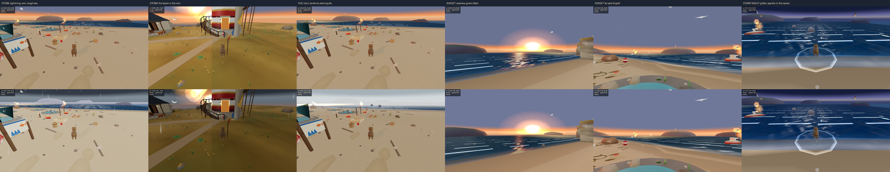

PLAY camera, 1280x720, tools/verify/verify-lighthouse.html (shots lb6_*; ?wx=storm|fog|sunset|night forces an event, ?wx=off is pass 5's look; the top row is off, the bottom row the event). Storm: slate sky and fog, dark clouds, rough sea with white caps and spray, rain streaks, a lightning flash, the beam's cone bigger and brighter in the rain, boats pitching (not visible in a still), wind howl and thunder. Fog: the fog closes to 10 to 56 m (never nearer), lanterns glow, the horn answers the beam, gulls silent. Sunset: warm light, glassy gold-glittered sea, far sails lit gold, a green flash. Starry night: stars, glitter in the water, blue-green sparkle in the waves where she wades. Whole scene triangles, meshes and casters unchanged (two Points added, no mesh).
